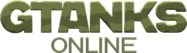

GTanks is a complex multimedia product created based on the old version of the 2010 game “Tanks Online”.
Take part in tank battles, destroy enemy tanks and help your team. A wide selection of weapons will open up
great tactical possibilities, because they are all equipped with unique properties in terms of firepower,
speed, armor and strength. Several game modes that allow you to immerse yourself in the intense and exciting
atmosphere of team battles. Choose from three the one that best suits your playstyle and begin your rise to
glory!